Zadání
- Zvolte si heuristiku, kterou budete øešit problém vážené splnitelnosti booleovské formule (simulované ochlazování, simulovaná evoluce, tabu prohledávání)
- Tuto heuristiku použijte pro øešení problému batohu. Mùžete použít dostupné instance problému (zde), anebo si vygenerujte své instance pomocí generátoru. Používejte instance s vìtším poètem vìcí (>30).
- Hlavním cílem domácí práce je seznámit se s danou heuristikou, zejména se zpùsobem, jakým se nastavují její parametry (rozvrh ochlazování, selekèní tlak, tabu lhùta...) a modifikace (zjištìní poèáteèní teploty, mechanismus selekce, tabu atributy...). Není-li Vám cokoli jasné, prosíme ptejte se na cvièeních.
- Problém batohu není pøíliš obtížný, vìtšinou budete mít k dispozici globální maxima (exaktní øešení) z pøedchozích prací, napøíklad z dynamického programování.
Implementace
Z pokroèilých iterativních metod jsem si vybral algoritmus simulované ochlazování. Je popsán "vývojovými diagramy" na následujících obrázcích.
 |
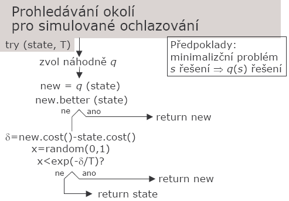 |
Zdrojové kódy
- SimAnneal.cs - Implementace algoritmu simulovaného ochlazování
- Batoh-SimAnneal.zip - Kód z minulých úloh použit pro testování (Greedy Proof, Dynamické programování)
Namìøené hodnoty a výsledky
Aby bylo možné správnì nastavit parametry algoritmu je nutné experimentovat. Pøi experimentech jsem sledoval èasovou nároènost a relativní chybu. Pro výpoèet globálního maxima (pro výpoèet relativní chyby) jsem použil døíve implementované dynamické programování. Algoritmus jsem srovnával s Greedy Proof (metodou nejrychlejšího vzestupu). Experimenty jsou shrnuty v následujících tabulkách a grafech.
Pro pøehlednost jsem použil tyto zkratky:
SA = Simulated Annealing = simulované ochlazování
GP = Greedy Proof = metoda nejrychlejšího vzestupu
triv = použito triviální øešení pro inicializaci SA
init GP = použito GA pro inicializaci SA
T0 = poèáteèní teplota
Tf = teplota tuhnutí
dT = zmìna teploty
equ = equilibrium
Pokud není uvedeno jinak, experimentoval jsem na instancích o velikosti n = 40. SA bylo na každé instanci spuštìno 20x a výsledná relativní chyba a èas je prùmìr z výsledù algoritmu.
Mìøil jsem na NTB s procesorem Centino 1.4GHz, nastavení max Performance pøi napájení z adaptéru. Použitý OS: Windows XP SP2 s .net Framework 2.
Nastavení zmìny teploty
Pøi tomto experimentu jsem nastavil T0 = (M * suma_cen_veci) / (n * suma_vah_veci), Tf = 10, equ = n a mìnil dT v rozmezí 0,8 - 0,999.| dT | relativní chyba | èas | ||||
|---|---|---|---|---|---|---|
| GP | SA triv | SA init GP | GP | SA triv | SA init GP | |
| 0,999 | 0,15% | 0,12% | 0,02% | 0,0625 | 278,731 | 642,995 |
| 0,995 | 0,42% | 0,07% | 58,154 | 128,795 | ||
| 0,99 | 0,64% | 0,09% | 27,17 | 66,054 | ||
| 0,98 | 1,14% | 0,12% | 13,159 | 32,717 | ||
| 0,975 | 1,29% | 0,13% | 10,525 | 24,725 | ||
| 0,95 | 2,01% | 0,14% | 5,358 | 12,509 | ||
| 0,9 | 3,26% | 0,14% | 2,644 | 6,039 | ||
| 0,8 | 5,50% | 0,15% | 1,271 | 2,944 | ||
Graf: Závislost relativní chyby na zmìnì rychlosti ochlazování
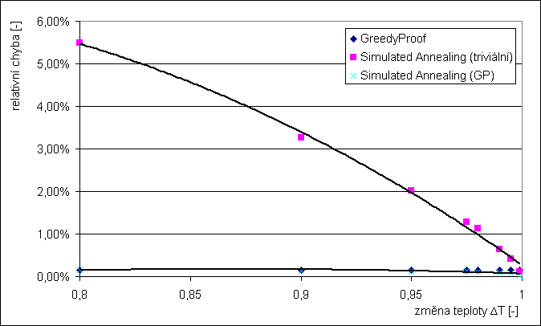
Graf: Závislost èasové složitosti na zmìnì rychlosti ochlazování
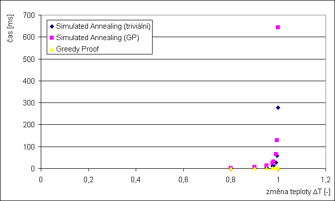
Nastavení velikosti equilibria
Nastavení: T0 = (M * suma_cen_veci) / (n * suma_vah_veci), Tf = 10, dT = 0,9 a 0,98, mìnil jsem equ v intervalu n / 5 až n * 5| equ | relativní chyba | èas | ||||||||
|---|---|---|---|---|---|---|---|---|---|---|
| GP | SA triv | SA init GP | GP | SA triv | SA init GP | |||||
| dT = 0,98 | dT = 0,9 | dT = 0,98 | dT = 0,9 | dT = 0,98 | dT = 0,9 | dT = 0,98 | dT = 0,9 | |||
| 200 | 0,15% | 0,34% | 1,16% | 0,07% | 0,12% | 0,0625 | 65,663 | 13,23 | 153,191 | 30,184 |
| 160 | 0,39% | 1,31% | 0,07% | 0,13% | 54,198 | 10,345 | 123,097 | 23,945 | ||
| 120 | 0,52% | 1,53% | 0,09% | 0,13% | 39,346 | 7,922 | 92,753 | 17,866 | ||
| 80 | 0,72% | 2,06% | 0,10% | 0,14% | 26,067 | 5,438 | 61,899 | 11,907 | ||
| 40 | 1,13% | 3,20% | 0,12% | 0,15% | 13,149 | 2,664 | 30,694 | 5,988 | ||
| 20 | 1,76% | 5,85% | 0,13% | 0,14% | 6,84 | 1,332 | 15,35 | 3,074 | ||
| 13 | 2,26% | 8,18% | 0,14% | 0,15% | 4,376 | 0,981 | 10,385 | 2,013 | ||
| 10 | 2,83% | 10,06% | 0,14% | 0,15% | 3,435 | 0,701 | 7,771 | 1,652 | ||
| 8 | 3,45% | 12,09% | 0,15% | 0,15% | 2,724 | 0,581 | 6,239 | 1,312 | ||
Graf: Závislost relativní chyby na velikosti equilibria
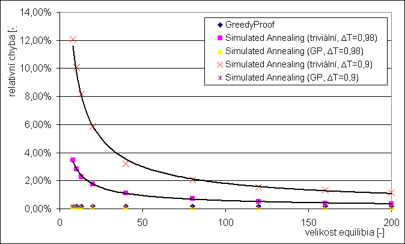
Graf: Závislost èasové složitosti na velikosti equilibria
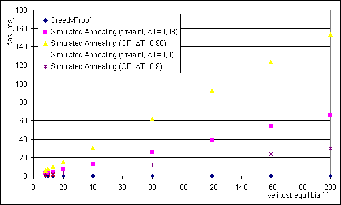
Nastavení teploty tuhnutí
Nastavení: T0 = (M * suma_cen_veci) / (n * suma_vah_veci), dT = 0,98, equ = n, mìnil jsem Tf v intervalu 1 až 10.| Tf | relativní chyba | èas | ||||
|---|---|---|---|---|---|---|
| GP | SA triv | SA init GP | GP | SA triv | SA init GP | |
| 1 | 0,15% | 0,94% | 0,12% | 0,0625 | 27,539 | 30,604 |
| 2 | 0,94% | 0,12% | 23,254 | 25,857 | ||
| 3 | 0,99% | 0,12% | 20,659 | 22,893 | ||
| 5 | 0,96% | 0,12% | 17,325 | 18,837 | ||
| 7 | 0,99% | 0,12% | 15,433 | 17,745 | ||
| 10 | 1,08% | 0,13% | 13,229 | 14,521 | ||
Graf: Závislost relativní chyby na teplotì tuhnutí
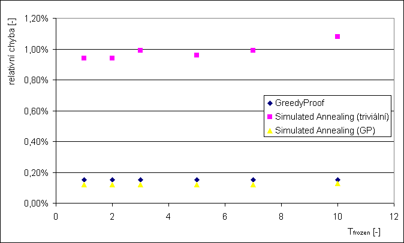
Graf: Závislost èasové složitosti na teplotì tuhnutí
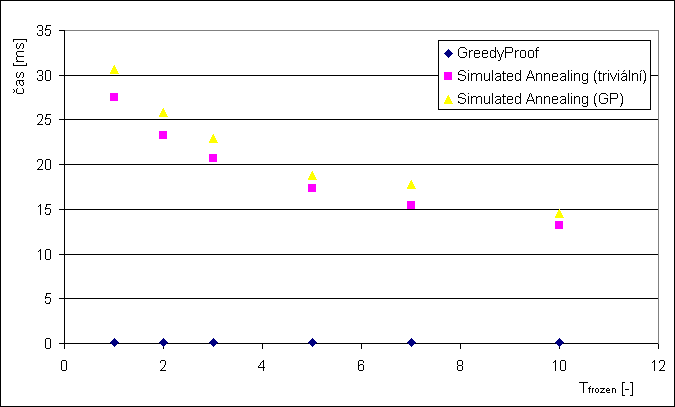
Nastavení poèáteèní teploty
Nastavení: Tf = 1, dT = 0,98, equ = n, mìnil jsem T0 v intervalu 35 až 200| T0 | relativní chyba | èas | ||||
|---|---|---|---|---|---|---|
| GP | SA triv | SA init GP | GP | SA triv | SA init GP | |
| 200 | 0,15% | 0,98% | 0,12% | 0,0625 | 32,928 | 34,81 |
| 150 | 0,95% | 0,12% | 32,247 | 32,547 | ||
| 100 | 0,92% | 0,12% | 28,632 | 32,676 | ||
| 80 | 1,01% | 0,12% | 28,491 | 34,389 | ||
| 60 | 1,11% | 0,12% | 25,667 | 32,868 | ||
| 50 | 1,23% | 0,12% | 24,735 | 30,273 | ||
| 45 | 1,37% | 0,12% | 23,764 | 30,454 | ||
| 40 | 1,71% | 0,12% | 23,153 | 28,821 | ||
| 37 | 1,98% | 0,12% | 22,693 | 27,059 | ||
| 35 | 2,25% | 0,12% | 22,381 | 27,239 | ||
Graf: Závislost relativní chyby na poèáteèní teplotì
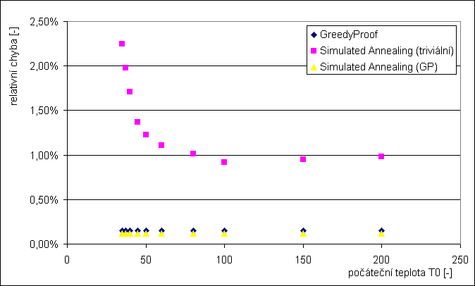
Graf: Závislost èasové složitosti na poèáteèní teplotì
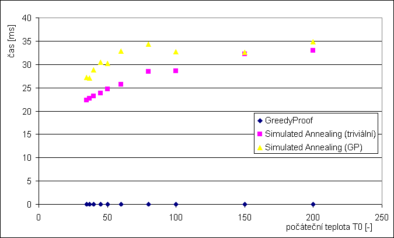
Závislost relativní chyby na velikosti instance
Jen tak pro zajímavost, srovnání prùmìrné relativní chyby pro rùznì velké instance. Nastavení parametrù: dT = 0,98, Tf = 5, equ = n, T0 = 67,31Graf: Závislost relativní chyby na velikosti instance
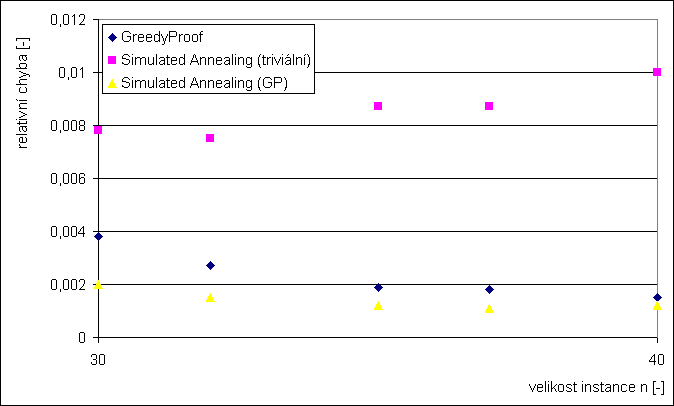
Ukázky prùchodu algoritmu stavovým prostorem
Na následujících grafech je zobrazena velikost ceny v závislosti na prozkoumaných stavech pro rùzné parametry. Pro zvìtšení kliknìte na prosím na graf.| init GP, dT = 0,8, Tf = 5, equ = n, T0 = 67,31 | triv, dT = 0,8, Tf = 5, equ = n, T0 = 67,31 |
| 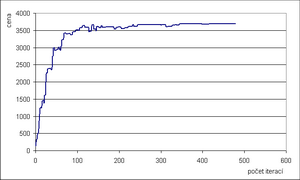 | 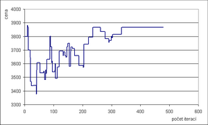 |
| init GP, dT = 0,9, Tf = 5, equ = n, T0 = 67,31 | triv, dT = 0,9, Tf = 5, equ = n, T0 = 67,31 |
| 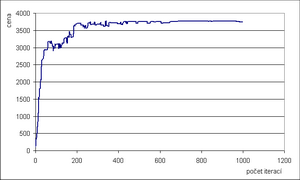 | 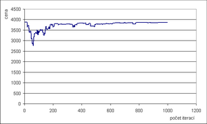 |
| init GP, dT = 0,98, Tf = 5, equ = n, T0 = 67,31 | triv, dT = 0,98, Tf = 5, equ = n, T0 = 67,31 |
| 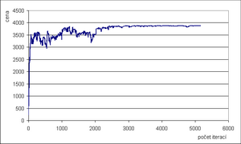 | 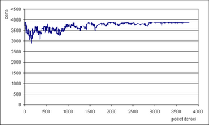 |
| init GP, dT = 0,98, Tf = 5, equ = n / 5, T0 = 67,31 | init GP, dT = 0,98, Tf = 5, equ = 5 * n, T0 = 67,31 |
| 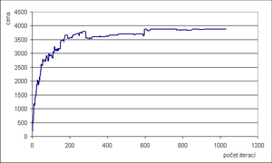 | 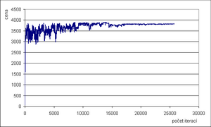 |
{kind=link}
{kind=link}
{kind=link}
{kind=link}
{kind=link}
{kind=link}
{kind=link}
{kind=link}
Závìr
Algoritmus simulované ochlazování je pomìrnì snadný na implementaci. Z experimentù mùžeme øíct, že je èasovì nároènìjší než hladový algoritmus a pøi inicializaci triviální konfiguraci dává prùmìrnì horší výsledky. Pokud inicializujeme SA hodnotou získanou GP algoritmem, v prùmìru vždy dojde ke zlepšení relativní chyby. Protože algoritmus si pomatuje nejlepší øešení, nemùže nikdy vyjít horší výsledek než u GP.U tohoto algoritmu (stejnì jako u dynamického programování) dopøedu známe poèet iterací cyklu, tudíž mùžeme odhadnout èasovou nároènost. Proto je na první pohled trochu divné, øádovì rozdílný èas pøi inicializaci triviálním øešením a øešením dodaným GP algoritmem. Skrytá èasová závislost je v generování nového stavu. Ten generujeme tak, že zmìníme bit na náhodné pozici v souèasné konfiguraci, ale výsledná konfigurace musí být pøípustným øešením. Proto pokud vyjdeme z triviální konfigurace je velká pravdìpodobnost, že nový stav vygenerujeme na 1. pokus. U již nalezeného øešení napø. algoritmem GP opakujeme generování pomìrnì dlouho, než dostaneme pøípustnou konfiguraci.
Dále z provedených experimentù mùžeme udìlat tyto závìry:
- Èím blíže dT k 1 tím menší relativní chyba, ale vìtší èasová nároènost.
- Poèáteèní teplotu je vhodné volit jako funkci velikosti instance. V experimentu dává nejlepší výsledky n * 2. Na dostuduj jsem našel tento vztah: M * suma(ceny) / (N * suma(váhy)), který dává podobné výsledky.
- Teplotu tuhnutí je nejlepší "vykoukat" z grafù pro závislost ceny na poètu prozkoumaných stavù. Pokud se cena nemìní, mìlo by dojít k zamrazení. To mùžeme pøímo ošetøit v programu a nemusíme tento parametr nastavovat.
- Velikost equilibria, èím vìtší tím menší relativní chyba, ale vìtší èasová nároènost.